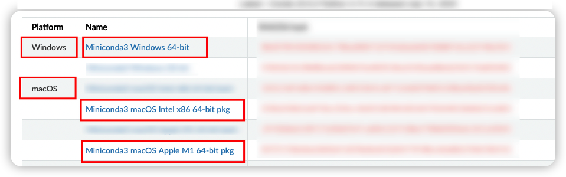
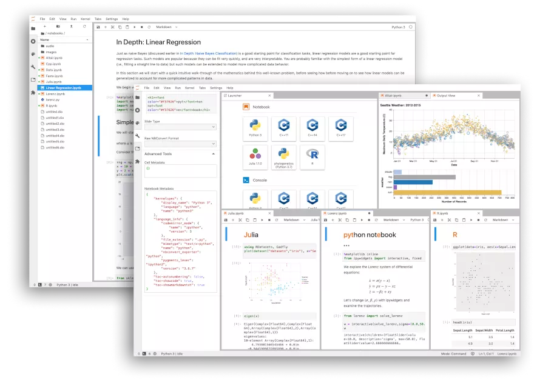
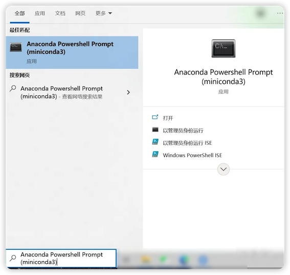
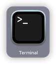
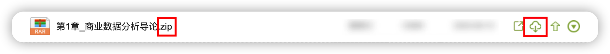
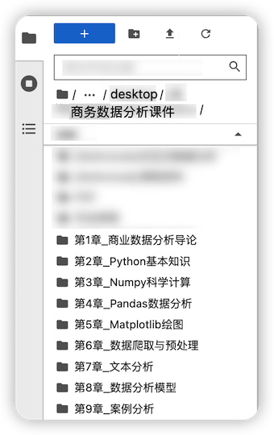

Python介绍与安装#
就像我们平时说话，人和人沟通是通过语言，我们称之为自然语言。
人和计算机沟通也需要语言，我们称之为计算机语言。Python和我们听说的C语言，Java语言一样，也是一门计算机语言。
1. python语言的优势#

《Introduction to Python for Econometrics, Statistics and Data Analysis》描述了Python语言的优势：
Python是一种流行的通用编程语言，它非常适合于各种各样的问题。 你需要一种可以作为端到端解决方案的语言，以便从访问基于web的服务、数据库、数据处理和统计计算。这些都可以用同一种语言完成。
数据处理和操作——特别是清洗和格式化
在数据集的采集和构造上实质上比R或MATLAB更有优势。
性能是一个问题，但不是最重要的。
免费是一个重要的考虑因素——Python可以自由部署，甚至可以部署到100个服务器上计算集群或云(例如Amazon Web Services或Azure)。
Python，作为通用语言，是R/MATLAB/Ox/GAUSS/Julia的补充。
2. 我的职业经验#
我开始接触python的时候，我就被她深深的吸引了。她拥有我之前学习过的编程语言绝大多数的优点，同时无需在多个语言上切换。
我在之前的工作中，使用Python开发：
网络数据的采集
数据分析
数据的可视化与建模
所以，python在数据分析，系统开发和网站开发等都是可以胜任的，无需掌握过多的计算机语言。
3. 安装Python#
3.1 安装miniconda#
要通过安装Miniconda来安装Python，你可以按照以下步骤进行操作：
下载miniconda：首先，访问Miniconda官方网站https://docs.conda.io/projects/miniconda/en/latest/ 并下载适用于你操作系统的Anaconda发行版。选择正确的版本，如Windows、macOS或Linux。

执行安装程序：一旦下载完成，找到下载的安装程序并运行它。根据安装向导的指示，选择安装选项和安装目录。通常情况下，建议保持默认选项，并勾选设置“Add Anaconda to my PATH environment variable”选项，这样Miniconda的命令行工具和Python都可以直接在命令行中使用。
完成安装：按照安装程序的指示进行安装，等待安装过程完成。
4. 激活Jupyterlab编程环境#
Jupyter是一个开源的交互式计算环境。它的名字来源于三种编程语言的缩写：Julia、Python和R。Jupyter提供了一个Web界面，用户可以在浏览器中编写、运行和共享代码。它的核心是Notebook，一个交互式文档，可以包含代码、文本、数学公式、图表等元素，使得代码的编写、运行和可视化结果可以在同一个环境中完成。Jupyter的灵活性和易用性使得它成为数据科学、机器学习和科学计算领域中广泛使用的工具。
{kind=link}
chatgpt JupyterLab是Jupyter项目的下一代界面，提供了一个灵活的工作区，可以在同一个界面中编辑代码、运行代码、查看结果、编写文档、可视化数据等。
4.1 进入命令行环境#
4.1.1 如果你是Windows用户#
在系统菜单里找到并启动Anaconda PowerShell或者Anaconda PowerShell Prompt应用，打开
{kind=link}
4.1.2 如果你是macOS用户#
如果你是macOS用户，找到并启动Terminal终端应用

4.2 安装jupyterlab#
在以上的命令行环境下，输入以下命令来安装jupyterlab：
conda install jupyterlab -y
如果提示是否继续(Y/N)，可以按回车键继续。
如果上述命令执行后，网速比较慢，可以使用替代方法：
pip config set global.index-url https://pypi.tuna.tsinghua.edu.cn/simple
pip install jupyterlab
然后，在以上的命令行环境下，输入以下命令来安装jupyterlab环境的中文包：
pip install jupyterlab-language-pack-zh-CN
4.3 进入Jupyter编程环境#
在以上命令行环境下，输入以下命令，并按回车键。
jupyter-lab
4.4 激活中文#
启动jupyterlab后，点击settings，点击language，选择中文简体

然后，页面提示，点击change and reload

4.5 如果遇到jupyterlab经常掉线#
请联系老师来处理
5 如何使用课件#
5.1 下载本课程课件#
在学习通上下载课件压缩包，压缩包格式为“.zip”为后缀的格式。
建议将压缩包拖拽到桌面进行解压缩。

使用本地解压缩软件，解压缩该zip格式压缩包。
如果没有解压缩软件，可以下载7zip软件。
5.2 用Jupyter打开课件#
在桌面上新建一个文件夹【商务数据分析课件】，将刚才下载并解压缩后的文件夹放入此文件夹中。
返回jupyter lab界面，找到desktop路径下的【商务数据分析课件】
之后我们所有章节的课件，都可以通过以上方法，下载、解压缩、在jupyter-lab中打开。
{kind=link}
5.3 Jupyter在教学中的应用#
在教学场景中，JupyterLab可以作为一个强大的工具来支持学生的学习和实践。以下是一些JupyterLab在教学中的常见用法：
笔记本分享和分发：教师可以创建JupyterLab笔记本，并与学生分享，学生可以通过浏览器访问并进行交互式学习。
演示和讲解：教师可以使用JupyterLab来创建交互式演示，包含代码、图表和文本，可以实时展示和解释概念。
编程实践：学生可以使用JupyterLab进行编程实践，通过编写和运行代码来学习和实践编程概念。
数据分析和可视化：JupyterLab提供了丰富的数据分析和可视化工具，学生可以使用这些工具来分析和探索数据，并可视化结果。
实验和模拟：JupyterLab支持各种编程语言和库，学生可以使用它来进行实验和模拟，例如科学计算、机器学习等。
交互式教学：JupyterLab的交互性和可视化能力使得教师可以创建交互式学习材料，学生可以在笔记本中进行实时的学习和练习。
总之，JupyterLab在教学场景中可以提供一个灵活、交互式和可视化的学习环境，帮助学生更好地理解和应用所学的知识。